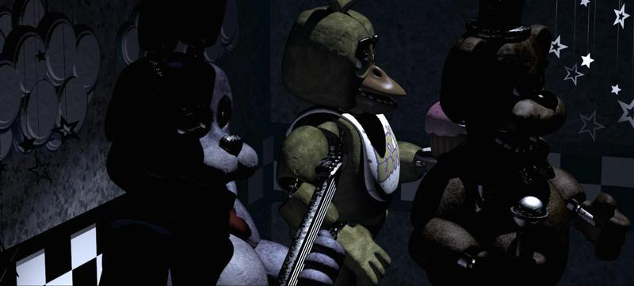
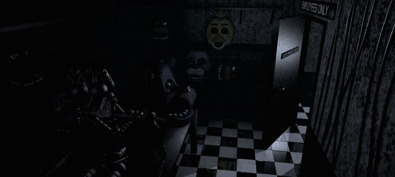
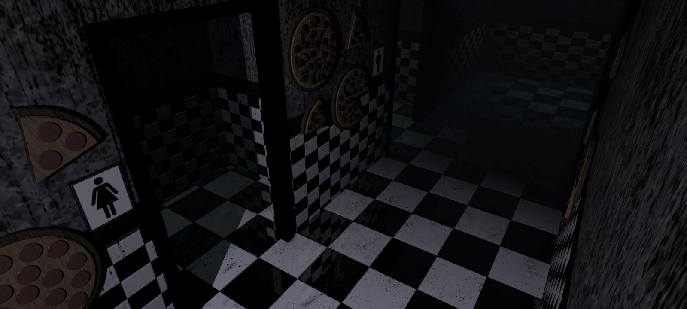

Five Nights At Freddy's 1: Monitoring Area


- The Office
- Show Stage
- kitchen
- Backstage
- Dining Area
- Pirate Cove
- East Hall
- West Hall
- Restrooms
- Supply Closet
-The office

The Office is a small, compact room. Against the wall in front of the player stands a desk, on top of which sits a few electronic monitoring devices,
as well as a fan, a drink, and various balled up papers.
Wires stream up to the ceiling from the monitoring devices.
The desk has two drawers, along with a speaker with a spider web that seems to be covering the speaker itself.
On top of one of the monitors sits a pink cupcake with large,
cartoony eyes that resemble those of the animatronic characters.
The wall behind the desk is adorned with a poster of Freddy Fazbear,
Bonnie, and Chica on stage, on top of which reads "CELEBRATE!" in large letters.
-Showstage

CAM 1A
The Show Stage is a location in Five Nights at Freddy's within Freddy Fazbear's Pizza and the default focus of the Monitor.
It is also the starting location for Freddy Fazbear and his bandmates, Bonnie and Chica.
It is located in front of the Dining Area,
where the titular Freddy Fazbear and his friends play music during the day for children and adults alike.
-Backstage

CAM 5
The Backstage is a small room located to the left of the Show Stage, used to store spare animatronic parts.
The room consists of a checkered, white-and-black tiled floor and a small table,
on which sits an endoskeleton and an extra Bonnie head.
To the back and left of the room sits a shelf, holding three spare Bonnie heads, two of Chica's, and three of Freddy Fazbear's.
An open door can be seen on the right wall, with a sign that says "EMPLOYEES ONLY" above it.
Wires hang loosely from the ceiling to the right of the camera.
-Dining Area

CAM 1B
The Dining Area appears to be a large room furnished with six tables lined up in three rows, ready for parties.
In the darkness, the walls of the Dining Area cannot be seen.
The tables themselves are covered in white tablecloths decorated with confetti patterns.
In the middle of the tables, lined up in a row, are different colored party hats.
Chairs line the tables on both sides.
These chairs boast confetti patterns as well, and there is a large gold star on the backrest of each one.
The floor itself is tiled with blue-and-red tiles.
A light illuminates the center of the room and it is too dark to see any entrances or exits in the area.
-Pirate Cove

CAM 1C
Pirate Cove is closed off by a large, cylindrical, purple-colored curtain, decorated with stars and sparkles.
There stands a sign, also decorated with stars, in front of the curtain that reads, "Sorry! Out of Order," which sometimes changes to "IT'S ME" when Foxy leaves.
Two lights can be seen on the back wall, one on either side of the curtain.
There are also star decorations hanging from the ceiling, and the floor is tiled black and white.
-East Hall


CAM 4A, CAM 4B
The East Hall is a dark hallway, barely illuminated by a single light, with the floor almost entirely hidden from the player's view.
Star decorations and wires hang from the ceiling.
On the wall are three cheerful posters of the animatronic characters.
On the far left is Chica, which has the text "EATING TIME!" in large letters above her head.
The center poster depicts Freddy, with the text "FUN TIME!" in large letters under his head.
The third depicts a rather droopy-eyed Bonnie with the text "PARTY TIME!" in large letters above his head.
Cobwebs can also be seen in the foreground.
In the end corner, the floor is shown and is the same bluish and black tile as the corresponding room in the West Hall and in the Dining Area.
On the floor, papers lay scattered about.
On the walls, papers with writing on them, as well as a poster outlining the rules of the establishment, are hung.
There is also a black and white checkered stripe with a red outline on the wall, and the rest of the wall is a grayish color.
-West Hall


CAM 2A, CAM 2B
The West Hall (CAM 2A) is the hallway leading from the Dining Area to The Office.
At the far end of the hallway, the Dining Area can be seen, as well as a light.
There is a door on the left with a low light shining through.
Star-shaped decorations hang from the ceiling.
The walls are gray, the floor is red and blue-tiled, much like in the East Hall and the Dining Area,
and the bottom of the walls are white and black-tiled and outlined in red.
On the left wall, various pictures drawn by children are hung, similar to the ones inside The Office.
At the end of the hallway, viewed in CAM 2B, is a corner littered with papers and trash.
On the walls hang some papers with writing on them, as well as a poster of Freddy holding out his mic with the words "Let's Party" in caps on top.
There appear to be monitors of some type on the ground near the door.
Star-shaped decorations hang here as well.
The floor are blue-ish and black tiles.
A bunch of wires seem to hang from the ceiling over the monitors near the door.
-Restrooms

CAM 7
In the camera view, the Restrooms consist of a short hallway with a pair of doorways leading to a women's and men's restroom, respectively.
The doorways have signs indicating which restroom is which, like most public restrooms.
The doorway leading to the Restrooms appears to be right underneath the camera on the map, but when looking at the camera, it can be seen at the opposite end of the hall.
The outer walls are decorated with festive pizza decorations; the top of the restroom walls are grayish,
while the bottom part is tiled in a black-and-white checkerboard fashion, as well as the floor.
The area behind the camera leads into the Dining Area.
-Kitchen

CAM 6
The Kitchen is the only area where the camera is disabled for the entirety of the game, thus no description of its physical appearance can be provided.
The only way to know for certain of an animatronic's presence within the Kitchen is through the audio (or via the Android version's Cheat Mode) - the clanging of various kitchen utensils and/or Freddy's jingle,
though the latter is somewhat unreliable as the jingle does not always play when Freddy is in the Kitchen.
The camera itself displays the lone text -CAMERA DISABLED- followed by AUDIO ONLY directly beneath it.
The camera features exclusively a black background with lots of static covering it up.
In Ultimate Custom Night, the Kitchen is once again completely unseen, with the only difference being that there is no "Camera Disabled" text,
and the "Audio Only" text has been moved to the top left corner of the screen.
-Supply Closet

CAM 3
The Supply Closet is a small room with a shelf on the wall opposite the doorway.
On the shelf are labeled bottles. On the far wall, a broom can be seen with a balled-up piece of paper sitting next to it.
The far wall and the floor have the same colored tiling, except the floor's tiling is larger.
Next to the broom is a mop sitting in a bucket.
Near the camera, the door can be seen, and is visibly open.
On the ceiling hangs a light, which illuminates the floor below.
The floor and lower parts of the wall are both made from gray and black checkered tiles.